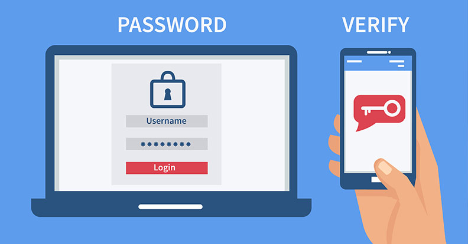
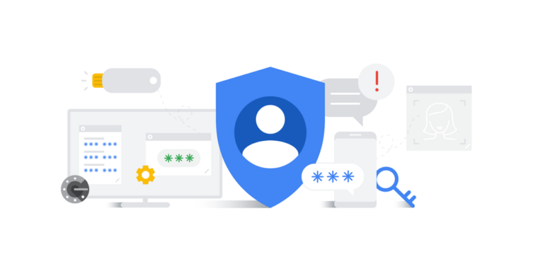
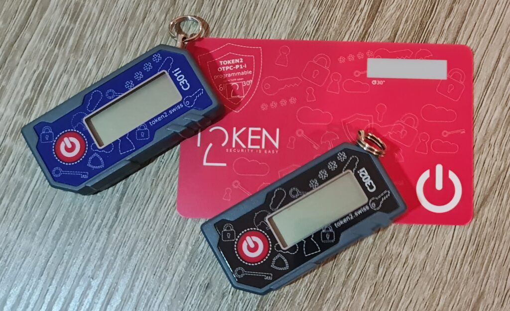
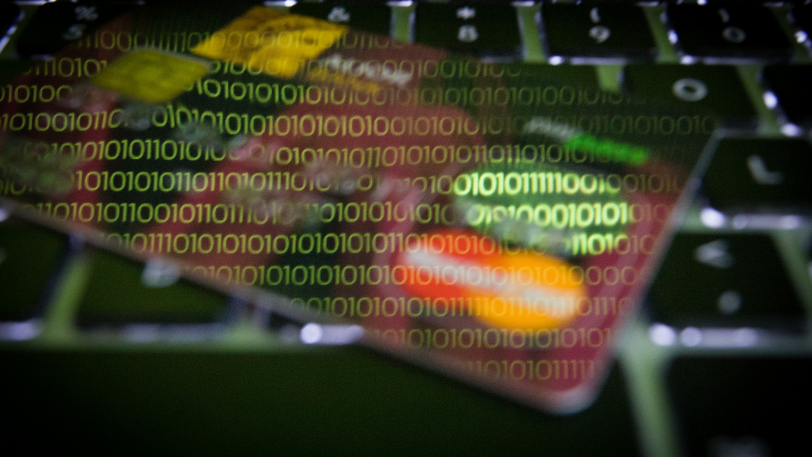
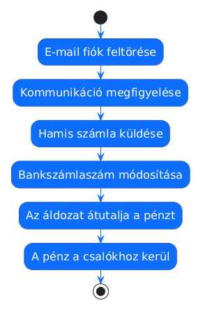

1. Kétfaktoros azonosítás alapjai
1.1 Mi a kétfaktoros azonosítás?
A kétfaktoros azonosítás (2FA) egy olyan biztonsági megoldás, amely a jelszó mellett egy második hitelesítési lépést is használ.
A rendszer célja, hogy akkor is megvédje a felhasználói fiókot, ha a jelszó illetéktelen kezekbe kerül.
1.2 A hitelesítési faktorok
- Tudás alapú: jelszó, PIN-kód
- Birtoklás alapú: telefon, token
- Biometrikus: ujjlenyomat, arcfelismerés

Miért fontos a 2FA?
- Csökkenti a fiókfeltörések esélyét
- Védi az e-mail és banki hozzáféréseket
- Plusz biztonsági réteget ad
- Ma már alapvető vállalati követelmény
2. A kétfaktoros azonosítás különböző formái
2.1 SMS alapú hitelesítés
Az egyik legismertebb kétfaktoros megoldás az SMS-ben küldött egyszer használatos kód. Bejelentkezéskor a rendszer egy rövid érvényességű kódot küld a felhasználó telefonjára, amelyet a jelszó után kell megadni.
Bár ez a módszer jelentősen biztonságosabb, mint a kizárólagos jelszóhasználat, mára több ismert támadási módszer is létezik ellene.
- Előnye: egyszerű és gyors használat.
- Hátránya: SIM-csere (SIM swap) támadásokkal kijátszható.
- Kockázat: a telefonszám eltérítése esetén a támadó megkaphatja a kódokat.
2.2 Authenticator alkalmazások
Az authenticator alkalmazások a modern kétfaktoros hitelesítés legnépszerűbb formái közé tartoznak. A rendszer nem SMS-ben küldi a kódot, hanem a telefonon futó alkalmazás generálja azt.
A legismertebb alkalmazások:
- Google Authenticator
- Microsoft Authenticator
- Authy
Ezek az alkalmazások úgynevezett időalapú egyszer használatos kódokat (TOTP – Time-based One-Time Password) generálnak.
A kódok általában 30 másodpercenként automatikusan változnak, ezért a támadóknak nagyon rövid idejük van azok felhasználására.
Miért biztonságosabb?
- A kód nem SMS-ben érkezik.
- Nehezebb eltéríteni, mint a telefonszámot.
- Offline is működik internetkapcsolat nélkül.
- A generált kód rövid ideig érvényes.
Hátrányok
- A telefon elvesztése problémát okozhat.
- Biztonsági mentés nélkül a hozzáférés elveszhet.
- A QR-kód beállítását védeni kell.

Authenticator alkalmazások előnyei
- Gyors bejelentkezés
- Nincs szükség SMS-re
- Magasabb biztonság
- Offline működés
- Széles körű támogatás
2.3 Push értesítéses jóváhagyás
Egyre több szolgáltatás használ push értesítéses hitelesítést. Ilyenkor a felhasználó telefonjára egy értesítés érkezik:
„Approve sign-in?”
A felhasználó egyetlen gombnyomással jóváhagyhatja vagy elutasíthatja a bejelentkezést.
Előnyei
- Rendkívül gyors és kényelmes.
- Nem kell kézzel beírni a kódot.
- Egyszerű mobilhasználat.
- Modern vállalati rendszerekben gyakori.
Kockázatok
- A felhasználó megszokásból jóváhagyhatja.
- Push bombing támadás esetén sok értesítés érkezhet.
- Figyelmetlenség esetén illetéktelen belépés történhet.
Push hitelesítés példák
- Microsoft Authenticator
- Google Prompt
- Duo Mobile
- Banki mobilalkalmazások
2.4 Hardveres tokenek
A hardveres tokenek fizikai eszközök, amelyek a legerősebb hitelesítési megoldások közé tartoznak.
A legismertebb ilyen eszköz a YubiKey, de sok bank saját hitelesítő tokent is használ.
A felhasználó USB-n, NFC-n vagy Bluetooth-on keresztül hitelesíti magát.
Előnyei
- Nagyon magas biztonság.
- Phishing ellen is erős védelem.
- Nehéz távolról feltörni.
- Vállalati környezetben ajánlott.
Hátrányai
- Külön eszköz szükséges.
- Elveszhet vagy megsérülhet.
- Drágább megoldás.

Hardveres token példák
- YubiKey
- RSA SecurID
- Banki tokenek
- USB biztonsági kulcsok
3. Összehasonlító táblázat
Különböző 2FA megoldások összehasonlítása
| Típus | Biztonság | Kényelem | Gyengeség |
|---|---|---|---|
| SMS | Közepes | Egyszerű | SIM-csere támadások |
| Authenticator alkalmazás | Magas | Jó | Telefon elvesztése |
| Push értesítés | Magas | Nagyon kényelmes | Jóváhagyási figyelmetlenség |
| Hardver token | Nagyon magas | Közepes | Fizikai eszköz szükséges |
Melyik 2FA megoldás a legbiztonságosabb?
A szakértők szerint a hardveres tokenek és az authenticator alkalmazások jelentik jelenleg a legerősebb védelmet az átlagos felhasználók számára.
Az SMS-alapú hitelesítés még mindig sokkal biztonságosabb, mint a kizárólagos jelszóhasználat, azonban a SIM-csere támadások miatt már nem számít modern, kiemelten biztonságos megoldásnak.
A vállalati rendszerekben egyre gyakoribb a push értesítéses hitelesítés és a hardveres biztonsági kulcsok használata, mivel ezek jelentősen csökkentik a phishing támadások sikerességét.
4. Gyakori hibák és tévhitek
4.1 Gyakori hibák
Bár a kétfaktoros azonosítás jelentősen növeli a biztonságot, a felhasználók sokszor olyan hibákat követnek el, amelyek gyengítik vagy akár teljesen hatástalanná teszik a védelmet.
A támadók gyakran nem magát a technológiát törik fel, hanem a felhasználók figyelmetlenségét és rossz szokásait használják ki.
Leggyakoribb hibák
- Ugyanaz a jelszó mindenhol: ha egy weboldal adatbázisa kiszivárog, a támadók más szolgáltatásokba is megpróbálnak belépni ugyanazzal a jelszóval.
- A 2FA kikapcsolása: sok felhasználó kényelmi okokból letiltja a kétfaktoros hitelesítést, így a fiók ismét csak a jelszótól függ.
- Az SMS túlzott bizalma: sokan azt gondolják, hogy az SMS-kód teljesen biztonságos, pedig SIM-csere támadással a támadó megszerezheti az üzeneteket.
- Jóváhagyás gondolkodás nélkül: push értesítés esetén a felhasználók gyakran automatikusan rányomnak az „Approve" gombra anélkül, hogy ellenőriznék a bejelentkezést.
- Biztonsági mentés hiánya: authenticator alkalmazás használatakor sokan nem mentik el a helyreállító kódokat, ezért telefoncsere vagy elvesztés esetén kizárhatják magukat a saját fiókjukból.
Mire figyeljünk?
- Használjunk egyedi jelszavakat
- Kapcsoljuk be a 2FA-t minden fontos fiókon
- Ne hagyjunk jóvá ismeretlen bejelentkezést
- Mentsük el a helyreállító kódokat
- Frissítsük rendszeresen az eszközöket

4.2 Gyakori tévhitek
A kétfaktoros azonosítással kapcsolatban számos tévhit terjed az interneten. Ezek hamis biztonságérzetet adhatnak a felhasználóknak.
Gyakori tévhitek
❌ „A 2FA feltörhetetlen."
A kétfaktoros hitelesítés jelentősen növeli a biztonságot, de phishing, SIM swap vagy social engineering támadásokkal továbbra is kijátszható lehet.
❌ „Az SMS-kód teljesen biztonságos."
Az SMS-alapú hitelesítés jobb a sima jelszónál, de a modernebb authenticator alkalmazások és hardveres tokenek erősebb védelmet nyújtanak.
❌ „Engem úgysem támadnak meg."
Az automatizált támadások során a bűnözők gyakran egyszerre több ezer felhasználót próbálnak megcélozni, ezért bárki áldozattá válhat.
❌ „A hosszú jelszó önmagában elég."
Egy erős jelszó fontos, de adatszivárgás vagy phishing esetén önmagában nem nyújt megfelelő védelmet.
Miért működnek még mindig a támadások?
A legtöbb sikeres támadás nem technikai hibát, hanem emberi figyelmetlenséget használ ki.
- Kapkodás
- Félelemkeltés
- Sürgetés
- Megszokásból történő kattintás
- Hamis biztonságérzet
5. Bankszámlaszám-változtatásos csalás
5.1 Hogyan működik?
A bankszámlaszám-változtatásos csalás az egyik legveszélyesebb vállalati pénzügyi támadási forma. A támadók célja, hogy a cégek vagy magánszemélyek a valódi partner helyett a csalók bankszámlájára utalják a pénzt.
Ezek a támadások gyakran nem technikai hibára, hanem megtévesztésre és bizalomra épülnek.
A csalás tipikus menete
- E-mail hozzáférés megszerzése: a támadó phishing vagy gyenge jelszó segítségével hozzáfér egy e-mail fiókhoz.
- Kommunikáció megfigyelése: a támadó figyeli a számlázást, partnereket és pénzügyi folyamatokat.
- Hamis üzenet küldése: a támadó a partner nevében bankszámlaszám-változást jelent be.
- Pénz átutalása: az áldozat a hamis számla alapján a csalók számlájára utal.

Miért működik?
- A támadó valós kommunikációt lát
- Hitelesnek tűnő e-maileket küld
- A sürgetés csökkenti az ellenőrzést
- A felhasználók bíznak a megszokott partnerekben
5.2 A csalás folyamatábrája
Az alábbi folyamatábra bemutatja, hogyan épül fel lépésről lépésre egy bankszámlaszám-változtatásos támadás.
Jól látható, hogy a támadók nem feltétlenül technikai rendszereket törnek fel, hanem a céges kommunikációt és az emberi figyelmetlenséget használják ki.

5.3 Figyelmeztető jelek
A támadások során gyakran vannak olyan apró jelek, amelyek gyanút kelthetnek. Ezek felismerése kulcsfontosságú lehet a csalás megelőzésében.
Gyanús jelek lehetnek:
- Sürgetés: „Azonnal utalni kell", „sürgős fizetés", „ma lejár".
- Új bankszámlaszám: hirtelen számlaszám-változás megfelelő magyarázat nélkül.
- Szokatlan nyelvezet: eltérő fogalmazás, furcsa mondatok vagy helyesírási hibák.
-
Apró domain eltérések:
például:
cegnev-support.coma valódicegnev.comhelyett. - Szokatlan időpontban érkező üzenetek: például késő este vagy hétvégén küldött sürgős kérések.
Mit tegyünk gyanú esetén?
- Ne utaljunk azonnal
- Ellenőrizzük telefonon a változást
- Nézzük meg pontosan az e-mail címet
- Kérjünk hivatalos visszaigazolást
- Értesítsük az IT vagy pénzügyi osztályt
6. Védekezési tanácsok
Védekezés céges környezetben
A vállalatok különösen gyakori célpontjai a pénzügyi és hozzáférési támadásoknak, ezért kiemelten fontos a több szintű védelem kialakítása.
Egyetlen hibás utalás vagy kompromittált e-mail fiók akár több millió forintos veszteséget is okozhat.
Ajánlott biztonsági intézkedések
- Több személyes jóváhagyás: nagyobb összegű utalásoknál több munkatárs jóváhagyása szükséges.
- Telefonos ellenőrzés: bankszámlaszám-változás esetén mindig történjen külön visszaigazolás.
- 2FA minden e-mail fiókon: a pénzügyi és vezetői fiókok különösen fontos célpontok.
- Dolgozói oktatás: a munkatársaknak ismerniük kell a phishing és social engineering támadásokat.
- Rendszeres jogosultság-ellenőrzés: csak azok férjenek hozzá érzékeny adatokhoz, akiknek valóban szükséges.
Védekezés magánszemélyek számára
A hétköznapi felhasználók is egyre gyakrabban válnak adathalász és pénzügyi támadások célpontjává.
Néhány alapvető biztonsági szabály betartásával azonban jelentősen csökkenthető a kockázat.
Ajánlott biztonsági lépések
- Authenticator alkalmazás használata: lehetőség szerint SMS helyett authenticator appot használjunk.
- Erős és egyedi jelszavak: minden szolgáltatáshoz külön jelszó ajánlott.
- Gyanús linkek kerülése: ne kattintsunk ismeretlen vagy sürgető üzenetekre.
- Banki értesítések bekapcsolása: így azonnal látható minden tranzakció.
- Rendszeres frissítések: az operációs rendszer és alkalmazások frissítése biztonsági hibákat javít.
7. Rövid esettanulmány
Valósághoz hasonló példa
Egy közepes méretű vállalat pénzügyi munkatársa e-mailben kapott értesítést egy régóta ismert partnercégtől. Az üzenet szerint a partner bankszámlaszáma megváltozott, ezért a következő számlát már az új számlaszámra kellett utalni.
Az e-mail teljesen hitelesnek tűnt:
- a valódi partner neve szerepelt benne,
- a levél stílusa megegyezett a korábbi kommunikációval,
- valódi számlaadatok és projektek szerepeltek az üzenetben.
A háttérben azonban egy támadó már korábban hozzáférést szerzett a partner egyik e-mail fiókjához, és hetek óta figyelte a cégek közötti kommunikációt.
A támadó pontosan tudta, mikor várható nagyobb összegű utalás, ezért a megfelelő pillanatban küldte el a hamis bankszámlaszámot.
Mivel a pénzügyi osztály nem ellenőrizte telefonon a változást, az utalás a csalók számlájára érkezett.
Az esettanulmány oktatási célú, valós támadási módszereken alapuló összefoglaló példa.

Mi segítette a támadót?
- Hiányzó telefonos ellenőrzés
- Gyenge e-mail védelem
- Nem megfelelő dolgozói tudatosság
- A megszokott partnerbe vetett bizalom
- Sürgető kommunikáció
Mit lehetett volna másképp tenni?
Az eset több ponton is megelőzhető lett volna megfelelő biztonsági intézkedésekkel.
Lehetséges megelőző lépések
- Telefonos visszaellenőrzés: bankszámlaszám-változás esetén mindig szükséges.
- Kétfaktoros azonosítás használata: csökkenti az e-mail fiók feltörésének esélyét.
- Dolgozói oktatás: a pénzügyi munkatársaknak ismerniük kell az ilyen támadások működését.
- Több szintű jóváhagyás: nagyobb összegű utalásokat több személy ellenőrizzen.
- Figyelmeztető jelek felismerése: sürgetés, új bankszámlaszám vagy szokatlan kommunikáció esetén fokozott óvatosság szükséges.
Tanulságok
- A 2FA jelentősen növeli a biztonságot
- A sürgetés mindig gyanús jel lehet
- Az e-mail önmagában nem elég hitelesítés
- A tudatosság kulcsfontosságú
- A legtöbb támadás emberi hibára épül